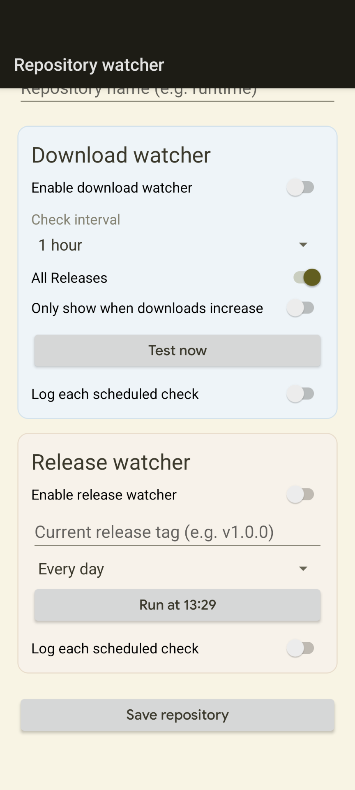
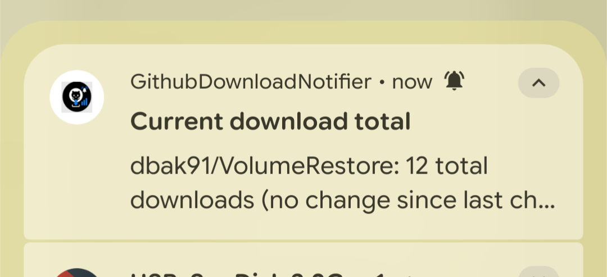
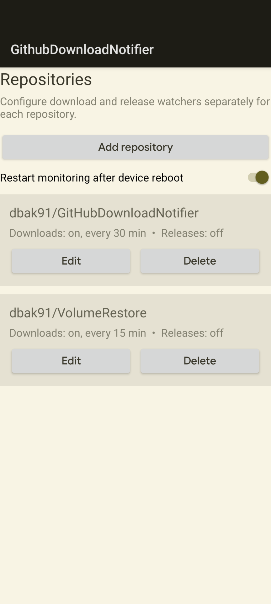

Home / GitHubDownloadNotifier
GitHubDownloadNotifier
A .NET 10 Android app that monitors GitHub release-asset download counts and new releases, with configurable schedules, logging and WorkManager background checks.
View on GitHubBack to homeThe problem it solves
GitHub does not notify you when your release assets are downloaded or when new releases appear. Checking manually is tedious, and polling too often risks exhausting API rate limits.
GitHubDownloadNotifier checks on a schedule you control and notifies you of changing download counts and new releases.
Key features
- Tracks release-asset download counts
- Detects new releases
- Configurable check intervals and schedules
- Request budget calculator to stay within GitHub API limits
- Logging of background checks
- Background checks via Android WorkManager
- Includes a unit test project
Tech stack
Screenshots


